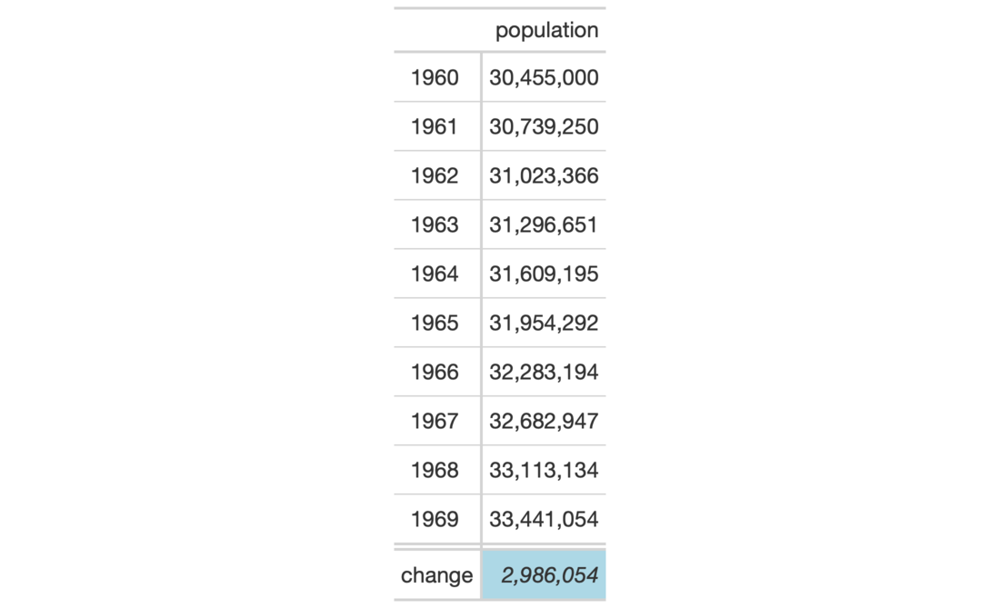

| cells_grand_summary {gt} | R Documentation |
The cells_grand_summary() function is used to target the cells in a grand
summary and it is useful when applying a footnote with tab_footnote() or
adding custom styles with tab_style(). The function is expressly used in
each of those functions' locations argument.
cells_grand_summary(columns = everything(), rows = everything())
columns |
The names of the columns that are to be targeted. |
rows |
The names of the rows that are to be targeted. |
A list object with the classes cells_summary and location_cells.
Location helper functions can be used to target cells with virtually any
function that has a locations argument. Here is a listing of all of the
location helper functions, with locations corresponding roughly from top to
bottom of a table:
cells_title(): targets the table title or the table subtitle depending on
the value given to the groups argument ("title" or "subtitle").
cells_stubhead(): targets the stubhead location, a cell of which is only
available when there is a stub; a label in that location can be created by
using the tab_stubhead() function.
cells_column_spanners(): targets the spanner column labels with the
spanners argument; spanner column labels appear above the column labels.
cells_column_labels(): targets the column labels with its columns
argument.
cells_row_groups(): targets the row group labels in any available row
groups using the groups argument.
cells_stub(): targets row labels in the table stub using the rows
argument.
cells_body(): targets data cells in the table body using intersections of
columns and rows.
cells_summary(): targets summary cells in the table body using the
groups argument and intersections of columns and rows.
cells_grand_summary(): targets cells of the table's grand summary using
intersections of columns and rows
cells_stub_summary(): targets summary row labels in the table stub using
the groups and rows arguments.
cells_stub_grand_summary(): targets grand summary row labels in the table
stub using the rows argument.
cells_footnotes(): targets all footnotes in the table footer (cannot be
used with tab_footnote()).
cells_source_notes(): targets all source notes in the table footer
(cannot be used with tab_footnote()).
When using any of the location helper functions with an appropriate function
that has a locations argument (e.g., tab_style()), multiple locations
can be targeted by enclosing several cells_*() helper functions in a
list() (e.g., list(cells_body(), cells_grand_summary())).

7-13
Other Helper Functions:
adjust_luminance(),
cell_borders(),
cell_fill(),
cell_text(),
cells_body(),
cells_column_labels(),
cells_column_spanners(),
cells_footnotes(),
cells_row_groups(),
cells_source_notes(),
cells_stub_grand_summary(),
cells_stub_summary(),
cells_stubhead(),
cells_stub(),
cells_summary(),
cells_title(),
currency(),
default_fonts(),
escape_latex(),
google_font(),
gt_latex_dependencies(),
html(),
md(),
pct(),
px(),
random_id()
# Use `countrypops` to create a gt table; add
# some styling to a grand summary cell with
# with `tab_style()` and `cells_grand_summary()`
tab_1 <-
countrypops %>%
dplyr::filter(
country_name == "Spain",
year < 1970
) %>%
dplyr::select(-contains("country")) %>%
gt(rowname_col = "year") %>%
fmt_number(
columns = population,
decimals = 0
) %>%
grand_summary_rows(
columns = population,
fns = list(
change = ~max(.) - min(.)
),
formatter = fmt_number,
decimals = 0
) %>%
tab_style(
style = list(
cell_text(style = "italic"),
cell_fill(color = "lightblue")
),
locations = cells_grand_summary(
columns = population,
rows = 1)
)